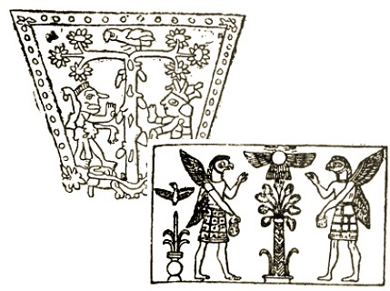

Sacred Texts Symbolism
Buy this Book at Amazon.com
|  | The Migration of Symbolsby Goblet d'Alviella[1894] |
This is a study of the migration and mutation of symbols by a late 19th century Belgian lawyer and Masonic scholar, Count Goblet d'Alviella (b. 1846, d. 1925). Originally published in 1891 in French, this book covers a huge web of interchangeable symbols, which are found over a wide range of cultures through the Near East, India, Europe, and further abroad, notably in Mesoamerica. He attempts to explain the widespread use of symbols such as the Swastika, the Tree of Life, the Winged Globe, the Trident and the Caduceus. Despite the title, d'Alviella does not adhere to one theory; instead he has a whole toolkit, including diffusion, mutation, independent origins and appropriation, as well as psychological, historical and sociological explanations.
He demonstrates that the same symbol can have different interpretations in different cultures and at different times. Such is the case with the swastika, which today is obviously associated with absolute evil, but which has been used historically as a symbol of the Sun's yearly path, and regarded as a good-luck symbol, even to this day, in the far East. With over 150 line illustrations, this book is an invaluable source book for symbologists, and makes fascinating reading for readers interested in the development of religion.
Chapter III. On the Causes of Alteration in the Meaning and Form of Symbols
Chapter V. On the Transmutation of Symbols
Addenda